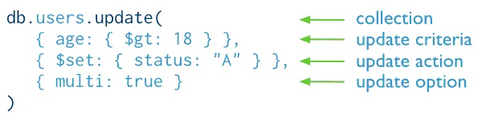

update命令
基本概念:
update命令可以更新指定文档的特定字段值，也可以替换整个文档，如果更新操作会增加文档大小，MongoDB将重新分配空间并重新定位
语法格式:
db.collection.update(query, update, {upsert:boolean, multi:boolean});
语法描述:
query：查询条件，文档，和find中的查询条件写法一致
update：修改内容，文档
upsert(可选)：如果值为true，那么当集合中没有匹配文档时，创建文档。默认false
multi(可选)：如果值为true，那么将更新全部符合条件的文档，否则仅更新一个文档，默认false
代码描述:将users集合中所有符合条件"age>18"文档的status字段更新为"A"

注意:更新其状态为'X'(提示:小于的操作符是$lt)
代码示例:
db.person.update({age:{$lt:30}},{$set:{"status":"X"}},{multi:true});